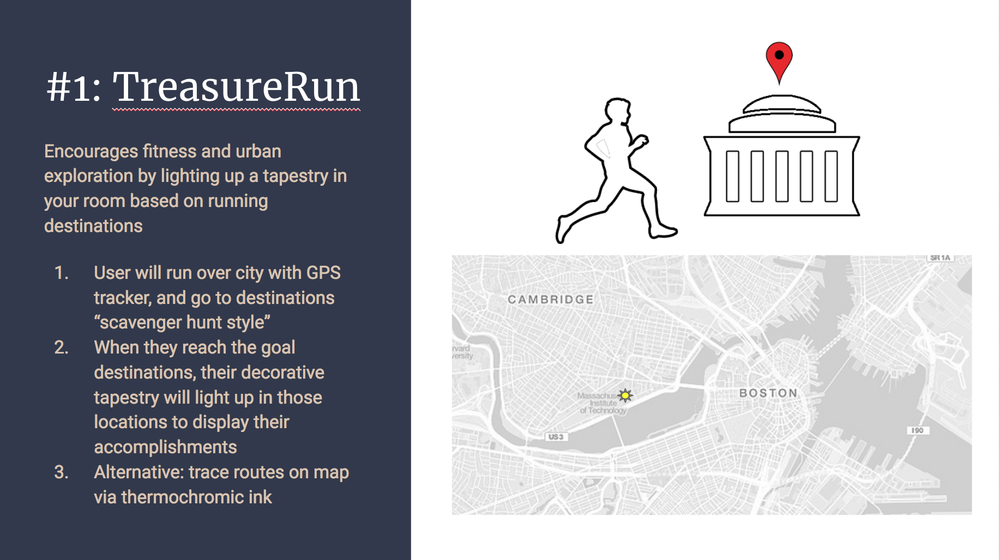
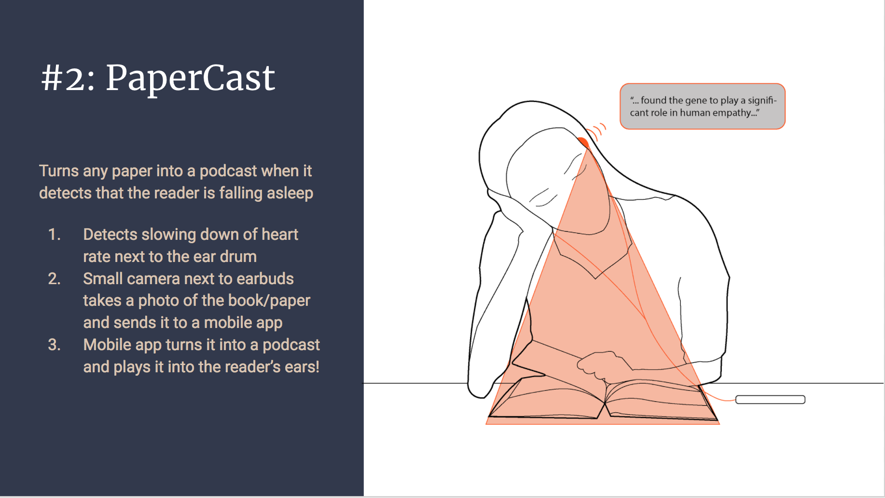
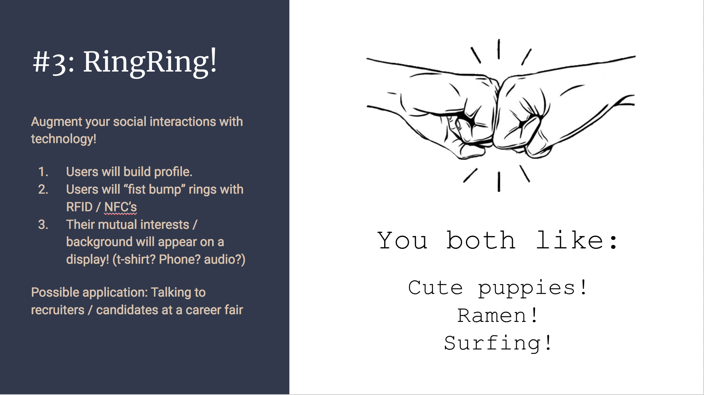
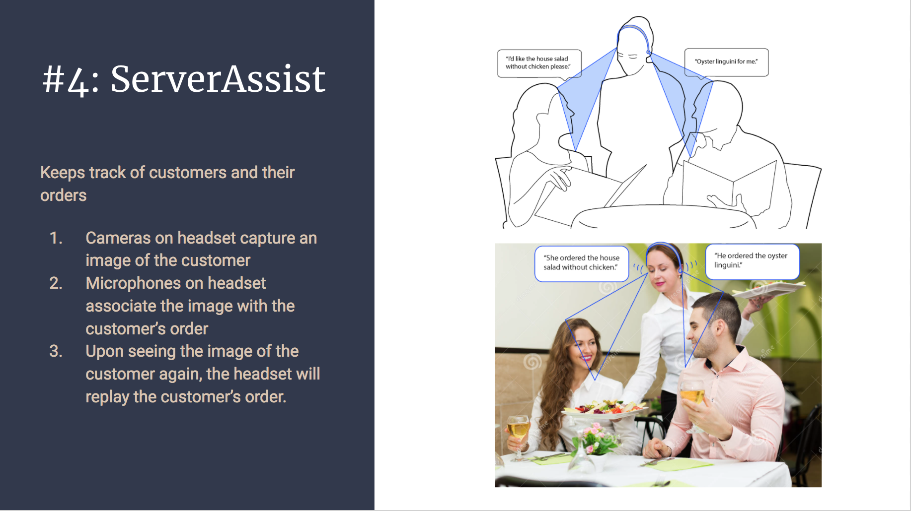
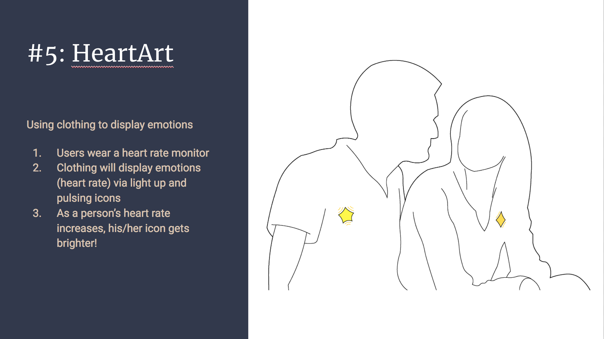

PaperCast is a tool that turns any paper into a podcast and helps you learn even while you're sleeping.
Whether you've just pulled an all-nighter and are on your second one, or you've got the post-lunch lull, PaperCast will know when you're falling asleep and will read your paper back to you!
A heart rate sensor clipped onto the user's ear sends continuous heart rate data to an Arduino Micro, which then sends the data to a Raspberry Pi. The Raspberry Pi runs a program to continuously process the data to determine the user's average awake heart rate. If the user falls asleep, his/her heart rate will drop by at least 10 BPM. The program will detect this change and trigger a camera that is attached to the Raspberry Pi to capture an image of the user's paper. After applying unwarping and thresholding, the program uses Pytesseract (a Python wrapper for Google's Tesseract OCR) and Google Text to Speech to transform the image to text, and finally to audio. A speaker module attached to the Raspberry Pi then starts to read the text to the unsuspecting (and unconscious) user!
Additionally, anybody on the same network as the Raspberry Pi can connect to a webpage and view the status of the user (awake/asleep), his/her current heart rate, his/her average awake heart rate, and the text that he/she is reading. We hosted our Python server on the Raspberry Pi and set up a static IP and port (192.168.43.152:8000) on a mobile hotspot. However, the IP address is only accessible to users on the hotspot and while the program is running.
Vel commodo, convallis vivamus, urna ac lacus fusce bibendum sed, amet dolor id tellus wisi duis bibendum, arcu ac ac tincidunt. Tempus lectus sagittis dapibus vel, sit wisi egestas suspendisse morbi, mi non, placerat sapien arcu proident accumsan praesent dui. Sapien sed.
We took the five ideas from Week 2, created presentation graphics, and presented them!
    We will be moving forward with PaperCast for our final project. PaperCast solves the problem of alerting a reader when he/she is falling asleep, or in the very least, helping the reader to learn the content of the reading through passive learning via listening to the content. When a user is reading a paper or book and starts to drift off, PaperCast turns the reading into a podcast and starts to play the reading into the user's earbuds or from the computer's speakers.
We will need to lasercut some sort of eyewear that will hold the camera(s), as well as an enclosure that attaches the eyewear to an ear clip heart rate sensor. We will use a heart rate sensor that detects drops in the user's heart rate, indicating that the user is falling asleep. We will also use cameras to take a photo of the reading when the user is asleep. The data from the heart rate sensor and the photo from the cameras will be sent over wifi. We will process the heart rate data in real time, and if a drop in heart rate is detected, we will use the photo sent from the camera and transcribe the reading into speech. The user input for our project is the user's heart rate.
For the final demo, we will demo the situation where a user is reading a paper and falls asleep. PaperCast should be able to detect when the user falls asleep and should quickly start to play the reading aloud to the reader. Since it is difficult to live demo falling asleep, we would possibly hard code a decrease in heartrate based on previous measurements for the demo, or have other sensors such as a decrease in movement using an accelerometer.
We started off with a lot of leftover prototyping materials from other projects, so we already had a Raspberry Pi 2, a wifi adapter for the Raspberry Pi, and an Arduino Micro. We also had the camera from the touchpad pset, so all we had to order for a first prototype was a heart rate sensor. We found a promising candidate, the Grove Ear Clip Heart Rate Sensor. Upon a deeper dive into the specs however, we realized we would also need to get the Grove Base Shield and that shipping would take up to 5 days. We did not want to wait that long, so we found another heart rate sensor on Amazon that did not need a base shield: the Pulse Sensor. This Pulse Sensor heart rate sensor came with an ear clip and was compatible with most Arduinos. We ordered an Arduino Uno just in case, but it turned out to work perfectly fine with the Arduino Micro that we had.
In the meantime while we waited for our heart rate sensor, we worked on capturing an image and converting it to audio. We used the camera provided in our touchpad pset. Following this tutorial, we converted the image to grayscale and thresholded it using the OpenCV library. Then, we passed the thresholded image into Pytesseract, a Python wrapper for Google's Tesseract OCR, to convert the image to a string. Finally, to play the text from our computers, we discovered that we could use our Macs' Terminal "say" command through the Python os library. We had half of our first prototype done!
Next, we booted our Raspberry Pi 2. We followed the setup instructions here, which consisted of formatting the SD card, putting the NOOBS files onto the SD card, and booting up the Raspberry Pi. For troubleshooting, we found this guide really useful: R-Pi Troubleshooting. Note to others and future selves: you need a monitor, keyboard, and mouse!
Once we had our heart rate sensor, we followed the instructions here to connect the pins of the sensor to our Arduino microcontroller. We then used PySerial, a Python library, to read the BPM data from the Arduino. (Anything sent to println in Arduino can be read by readline() in PySerial). We had some trouble reading the BPM correctly - on Macs, using PySerial's readline() may send some extra slashes \\, but when you translate to the Raspberry Pi, you can just do readline() without parsing the input for the actual BPM number. Here, we are testing the BPM readings from the heart rate sensor:
We also spent some time understanding the Pulse Sensor - it's an optical sensor, so if there is too little or too much ambient light, it may have a hard time cancelling out the noise. We had to play around with it before we were able to use it quickly without getting too much noise. Pro tip: use the ear clip, and watch the blinks on the Arduino for feedback! If the blinks are slow and steady, you're doing well. If they are quick and spastic, then adjust the sensor until you get the slow and steady blinks.
Finally we integrated the reading of BPM data with our earlier work on image to text audio conversion. We manually set a BPM awake threshold (for testing, we set this threshold to be lower than our average heart rate), and if our heart rate dipped below that threshold, then our program would trigger the image processing.
Here, we are using BPM data to trigger image capture:
This video shows our first pass at converting image to audio:
As discussed in our presentation, there were some limitations to our first prototype. The first was that the camera we used did not operate at a high enough resolution to capture a clear image of our text from more than 5 inches away. Positioning the camera within a couple inches of the text would significantly hinder the reader's ability to read while awake, so we needed a camera with a higher resolution.
Another limitation was that in order for Pytesseract to correctly transform the image to string, the image needed to be as straight as possible. If it was rotated maybe more than 15 degrees, then Pytesseract would have a really hard time and would spit out gibberish text. For the next iteration, we would need to unwarp warped images and correct any rotation in the image before passing it into Pytesseract.
Our main milestones for our next prototype included:
1. Improving calibration of BPM data
2. Setting up the Raspberry Pi and necessary modules (camera and speaker)
3. Sending data wirelessly
4. Improving image processing for more accurate image to text conversion
5. Improving speech system
6. Designing a form factor for the entire setup
From our work earlier on processing BPM data, we learned that before gathering data, we needed to calibrate the sensor. We had already implemented one round of calibration, where we gave the sensor 15 seconds to calibrate itself, eliminating some of the noisier BPM data in the beginning. For our next iteration, we added a round of calibration to determine the user's average awake BPM threshold. Once the system has received 15 BPM data points under 95 BPM, it deems the data stable and starts to calculate the user's average heart rate from the next 15 BPM data points. After the average has been calculated, the system sets the awake/asleep BPM threshold equal to: user's average BPM - 10 BPM.* If the system receives 10 BPM data points under this awake/asleep threshold, then it deems the user asleep and triggers the image processing.
*Research shows that heart rate drops significantly while asleep: Normal Heart Rate Sleeping